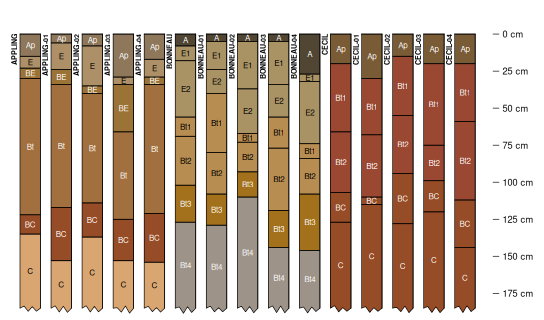
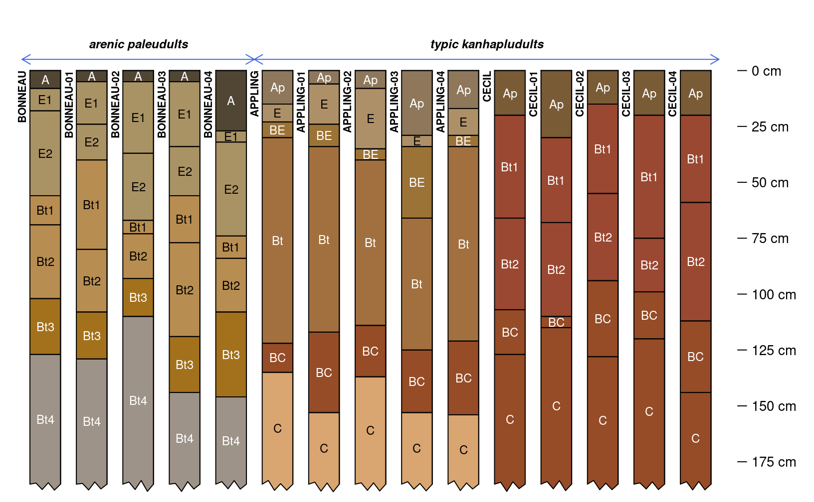
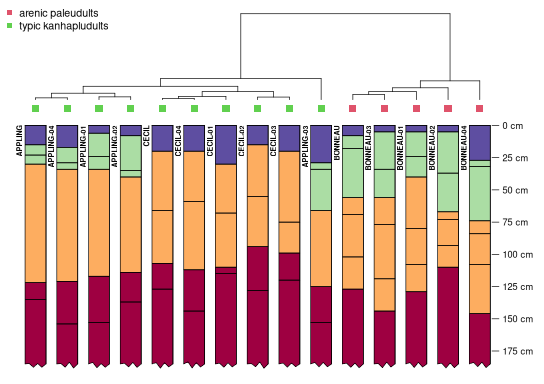

Introduction
With the release of {aqp} 2.0, the soil profile comparison algorithm
implemented in profile_compare() (Beaudette et al., 2013)
has been completely re-written as NCSP() and re-named the
“Numerical Comparison of Soil Profiles”. A more recent discussion of
this algorithm is provided in Maynard et al. (2020).
This short vignette demonstrates how to use the NCSP()
function from {aqp} 2.x to perform a pair-wise comparison of soil data
encoded as a SoilProfileCollection object. The pair-wise
comparison of site-level attributes, previously available in
profile_compare() has been removed from NCSP()
and implemented as a stand-alone function named
compareSites(). A final distance matrix (combining horizon
and site level attributes) is created via weighted average. A more
detailed version of this vignette can be found in the Pair-Wise
Distances by Generalized Horizon Labels tutorial.
A Simple Example
Consider three soil profiles, containing basic morphology associated with the Appling, Bonneau, and Cecil soil series. These data are provided in the example data set “osd” as part of the {aqp} package.
Simulation is used below to generate 4 realizations of each soil
series, using the perturb() function.
# assume a standard deviation of 10cm for horizon boundary depths
# far too large for most horizons, but helps to make a point
x$hzd <- 10
# generate 4 realizations of each soil profile in `x`
# limit the minimum horizon thickness to 5cm
set.seed(10101)
s <- perturb(x, id = sprintf("sim-%02d", 1:4), boundary.attr = 'hzd', min.thickness = 5)
# combine source + simulated data into a single SoilProfileCollection
z <- combine(x, s)A quick review of the source and simulated profiles, note patterns in
horizon depths, horizon designation, and moist soil colors. The profiles
have been visually truncated at 185cm for clarity (note ragged bottoms).
The new .aqp.plotSPC.args option is used to set default
arguments to plotSPC() for the remainder of the R session.
Simulated profiles are labeled with a numeric suffix (e.g. “-01”)
# set plotSPC argument defaults
options(.aqp.plotSPC.args = list(name.style = 'center-center', depth.axis = list(style = 'compact', line = -2.5), width = 0.33, cex.names = 0.75, cex.id = 0.66, max.depth = 185))
par(mar = c(0, 0, 0, 1))
plotSPC(z)
Subgroup level classification (encoded as an un-ordered factor) will
be used as a site-level attribute for computing pair-wise distances.
Quickly review the grouping structure with
groupedProfilePlot().
# encode as a factor for distance calculation
z$subgroup <- factor(z$subgroup)
par(mar = c(0, 0, 1, 1))
groupedProfilePlot(z, groups = 'subgroup', group.name.offset = -10, break.style = 'arrow', group.line.lty = 1, group.line.lwd = 1)
Horizon designation, grouped into “generalized horizon labels” will be used as the horizon-level attribute for computing pair-wise distances. REGEX pattern matching is used to apply generalized horizon labels (GHL) to each horizon, and are encoded as ordered factors. A thematic soil profile sketch (horizon color defined by a property or condition) is a convenient way to graphically check GHL assignment.
# assign GHL
z$genhz <- generalize.hz(
z$hzname, new = c('A', 'E', 'Bt', 'C'),
pattern = c('A', 'E', 'Bt', 'C|Bt4')
)
# check GHL
par(mar = c(0, 0, 3, 1))
groupedProfilePlot(z, groups = 'subgroup', group.name.offset = -10, break.style = 'arrow', group.line.lty = 1, group.line.lwd = 1, color = 'genhz')
Define weights and compute separately horizon and site level distance
matrices. In this case, the site-level distances are give double the
weight as the horizon-level distances. See the manual pages
(?NCSP and ?compareSites) for additional
arguments that can be used to further customize the comparison.
# horizon-level distance matrix weight
w1 <- 1
# perform NCSP using only the GHL (ordered factors) to a depth of 185cm
d1 <- NCSP(z, vars = c('genhz'), maxDepth = 185, k = 0, rescaleResult = TRUE)
# site-level distance matrix weight
w2 <- 2
# Gower's distance metric applied to subgroup classification (nominal factor)
d2 <- compareSites(z, 'subgroup')
# perform weighted average of distance matrices
D <- Reduce(
`+`,
list(d1 * w1, d2 * w2)
) / sum(c(w1, w2))Investigate the final distance matrix using divisive hierarchical
clustering. The plotProfileDendrogram() function is a
convenient way to combine the resulting dendrogram with soil profile
sketches. Note that the site-level distances have a very strong effect
on the overall clustering structure.
library(ape)
# divisive hierarchical clustering
h <- as.hclust(diana(D))
# hang soil profile sketches from resulting dendrogram
par(mar = c(1, 0, 0, 1))
plotProfileDendrogram(z, clust = h, scaling.factor = 0.0075, y.offset = 0.1, width = 0.33, color = 'genhz', name = NA)
# annotate dendrogram with subgroup classification
# this handy function provided by the ape package
tiplabels(pch = 15, col = c(2, 3)[z$subgroup], cex = 1.5, offset = 0.05)
# helpful legend
legend('topleft', legend = levels(z$subgroup), pch = 15, col = c(2, 3), bty = 'n')
References
- Beaudette, D.E., P. Roudier, and A.T. O’Geen. 2013. Algorithms for quantitative pedology: A toolkit for soil scientists. Computers and Geoscience 52:258-268.
- Maynard, J.J., S.W. Salley, D.E. Beaudette, and J.E. Herrick. 2020. Numerical soil classification supports soil identification by citizen scientists using limited, simple soil observations. Soil Science Society of America Journal 84:1675-1692.